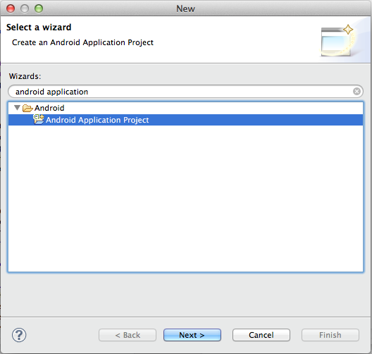
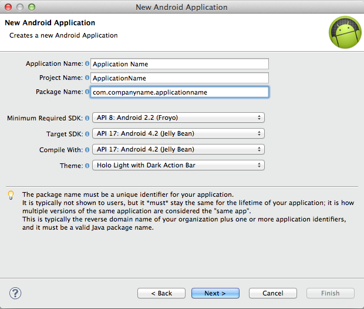
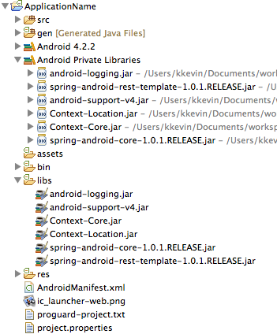
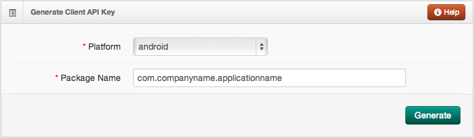
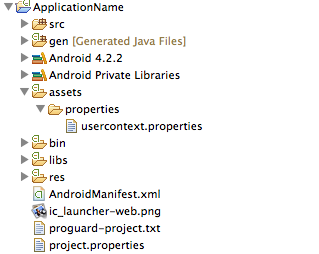
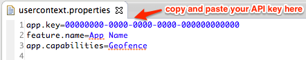
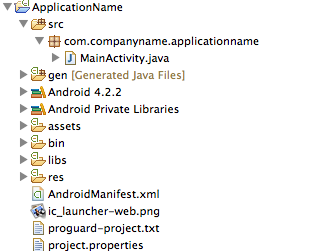

Get Gimbal up and running in your Android App.
The following steps will set up an application in Eclipse ready for enabling Gimbal features.
Make sure you:
In Eclipse choose File > New > Project and search for "Android Application Project" as seen below.

Fill out your "Application Name", "Project Name", and "Package Name" fields.
Important Make sure the "Minimum Required SDK", "Target SDK", and "Compile With" fields are set to at least API 8: Android 2.2. Then click through the rest of the "New Android Application" setup wizard.

Note You will find these jars in the client-sample-mall-mart-embed/libs folder inside the Gimbal SDK zip file.
Add jars to your Android application by copy and pasting them into the libs folder of your android project.
Your project should now look similar to this:

Follow the link below to register your application.
Note This link should take you to the "Sandbox" environment. You can check by looking in the top right part of the page and verifying that it says "Sandbox" instead of "Production". Sandbox is an environment for developers to build in before releasing and does not require you to manually generate an application fingerprint.
Fill in the fields to look something like this:

Then click Generate.
Below the "Generate Client API Key" box you were just using, a new box should appear with your newly generated API key.
In order for your application to use Gimbal API's, it has to authenticate itself by providing your API key, name, and desired capabilities. You will need to create a file called usercontext.properties at the location assets/properties. You may have to create the properties folder yourself.

You will add three lines to your file so it looks like the following:

To allow Gimbal location to function, you need to add a few elements to your AndroidManifest.xml file.
First, you need to specify the permissions that Gimbal needs to function properly. They are shown below.
<uses-permission android:name="android.permission.INTERNET" />
<uses-permission android:name="android.permission.READ_PHONE_STATE" />
<uses-permission android:name="android.permission.ACCESS_FINE_LOCATION" />
<uses-permission android:name="android.permission.ACCESS_WIFI_STATE" />
<uses-permission android:name="android.permission.WAKE_LOCK" />
<uses-permission android:name="android.permission.BATTERY_STATS" />
<uses-permission android:name="android.permission.ACCESS_NETWORK_STATE" />
<uses-permission android:name="android.permission.WRITE_SETTINGS" />
<uses-permission android:name="android.permission.RECEIVE_BOOT_COMPLETED" />
Then, you need to add a service and a receiver to your application. Make sure you place them inside of the <application></application> XML element. Where it says "com.companyname.applicationname" in red, replace it with your application's package name. (the package name you entered when you generated your API key)
<service
android:name="com.qualcommlabs.usercontext.service.GimbalService"
android:exported="false" >
<intent-filter>
<action android:name="com.companyname.applicationname.service.USER_CONTEXT_SERVICE" />
</intent-filter>
</service>
<receiver
android:name="com.qualcommlabs.usercontext.service.UserContextServiceStartStopReceiver"
android:enabled="true" >
<intent-filter>
<action android:name="android.intent.action.BOOT_COMPLETED" />
</intent-filter>
<intent-filter>
<action android:name="android.intent.action.ACTION_SHUTDOWN" />
</intent-filter>
</receiver>
Now, we will add code to your MainActivity which is located in src/com.companyname.applicationname/MainActivity.java. This file should have been generated automatically when you created the project. It will contain a few overridden methods by default. You can leave them the way they are for now.

Important We are adding the code here for the purpose of demonstrating how to quickly get an application functioning. The location of this code in your application will depend on your design and intended usage of Gimbal.
First, import the necessary files:
import android.util.Log;
import com.qualcommlabs.usercontext.Callback;
import com.qualcommlabs.usercontext.ContextCoreConnector;
import com.qualcommlabs.usercontext.ContextCoreConnectorFactory;
Then, in your onCreate() method obtain an instance of the ContextCoreConnector and store it in a field. At the end, we call a private helper method called checkContextConnectorStatus(). Don't worry about any errors Eclipse gives you for writing this line because we will implement the method in a few steps:
private ContextCoreConnector contextCoreConnector;
@Override
protected void onCreate(Bundle savedInstanceState) {
super.onCreate(savedInstanceState);
setContentView(R.layout.activity_location);
contextCoreConnector = ContextCoreConnectorFactory.get(this);
checkContextConnectorStatus();
}
Finally, write the checkContextConnectorStatus() method we mentioned earlier. First, it checks to see if the permission has been enabled by the user. If it has then we use other Gimbal features (Geofencing, Communication, Interest Sensing, etc). If it hasn't then we call enable(). This prompts the user to accept terms of service and enable gimbal. If enable() succeeds, we are ready to use Gimbal features. Otherwise, we log the error message:
private void checkContextConnectorStatus() {
if (contextCoreConnector.isPermissionEnabled()) {
// Gimbal is already enabled
}
else {
contextCoreConnector.enable(this, new Callback<Void>() {
@Override
public void success(Void arg0) {
// Gimbal is ready
}
@Override
public void failure(int arg0, String arg1) {
Log.e("failed to enable", arg1);
}
});
}
}
Now, you are ready to add varioud Gimbal features. In order to launch the application make sure your phone is plugged in and in debug mode, then in Eclipse right click on your project and click Run as -> Android Application. Upon successful launch, you will be prompted to accept Gimbal terms of service.
For additional details on how to leverage the SDK functionality, refer to the sample applications and documentation included in the zip file provided.